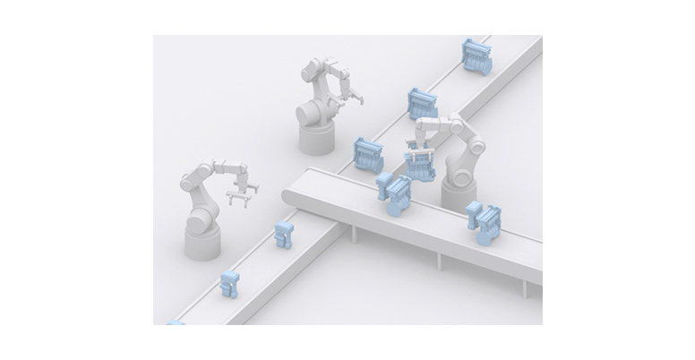
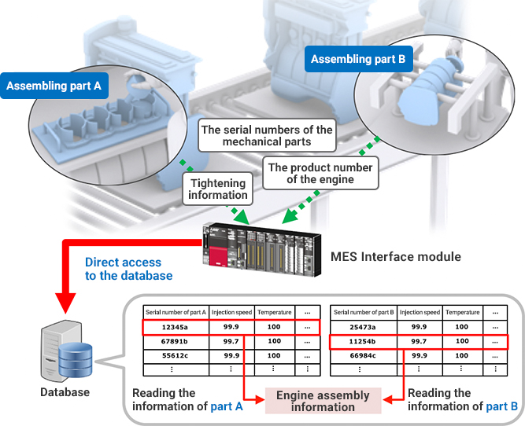
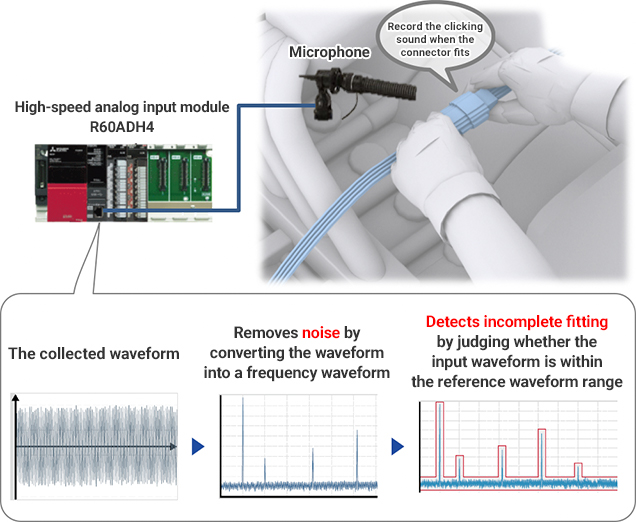
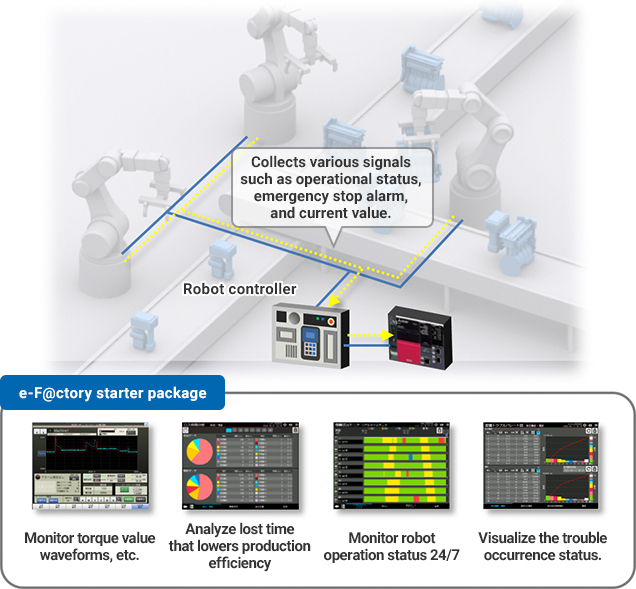
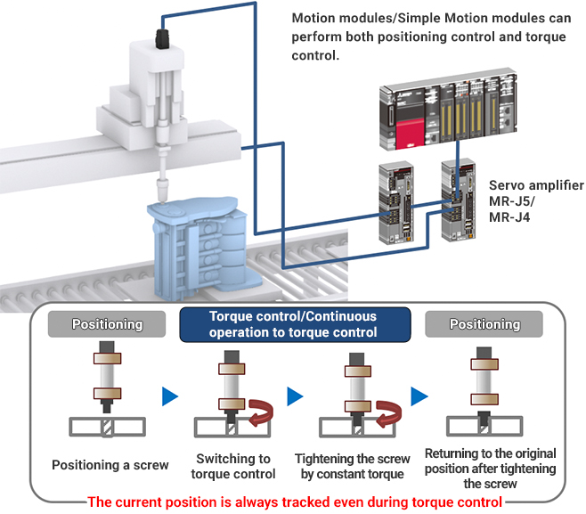
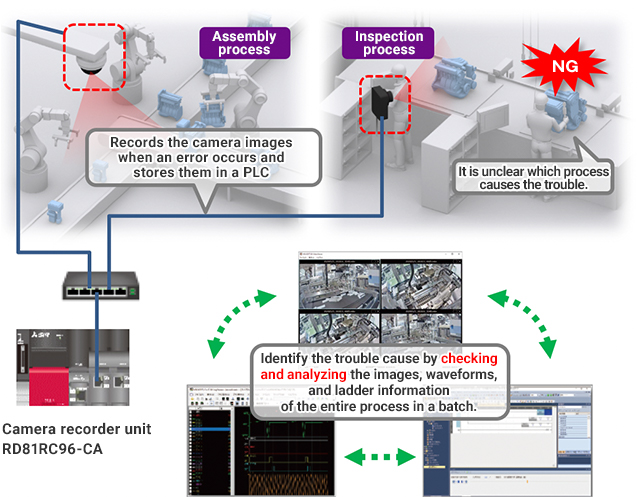

Solusi
Manufaktur Otomotif

Perakitan Mesin
- Meningkatkan ketertelusuran dengan menyimpan nomor seri komponen mekanis dan informasi riwayat proses/peralatan dalam database
- Meningkatkan kualitas dengan mencegah pemasangan konektor yang tidak sempurna
- Melakukan pemeliharaan preventif dengan memantau status operasional robot
- Mengurangi waktu siklus pengencangan sekrup dengan nut runner
- Mempersingkat waktu pemulihan ketika terjadi kesalahan dengan memantau proses yang diotomatisasi oleh robot dan proses dengan operator

Solusi untuk Masalah
| Masalah | Solusi |
|---|---|
| Meningkatkan ketertelusuran dengan menyimpan nomor seri komponen mekanis dan informasi riwayat proses/peralatan dalam database | Hubungkan informasi perakitan mesin dan informasi setiap komponen mekanis yang dikumpulkan oleh modul MES Interface dalam database. |
| Meningkatkan kualitas dengan mencegah pemasangan konektor yang tidak sempurna | Kumpulkan kebisingan selama pemasangan dengan modul input analog kecepatan tinggi dan lakukan analisis FFT dengan PLC. |
| Melakukan pemeliharaan preventif dengan memantau status operasional robot | Visualisasikan status operasional robot dengan paket starter e-F@ctory. |
| Mengurangi waktu siklus pengencangan sekrup dengan nut runner | Beralih ke kontrol torsi selama operasi kecepatan tinggi. |
| Mempersingkat waktu pemulihan ketika terjadi kesalahan dengan memantau proses yang diotomatisasi oleh robot dan proses dengan operator | Pantau proses operasi dengan menghubungkan beberapa kamera jaringan ke satu PLC. |
Masalah
Meningkatkan ketertelusuran dengan menyimpan nomor seri komponen mekanis dan informasi riwayat proses/peralatan dalam database
Solusi
Simpan nomor seri komponen mekanis dan informasi proses yang dikumpulkan dari setiap proses dalam server database. Wujudkan ketertelusuran dengan menghubungkan informasi perakitan mesin dan informasi komponen mekanis yang dikumpulkan oleh modul MES Interface dalam database.
- Hubungkan nomor seri produk dengan berbagai data, yang memungkinkan tidak hanya pelacakan kembali proses produksi setiap produk tetapi juga pemanfaatan data untuk berbagai keperluan.
Poin
- Hubungkan data yang dikumpulkan oleh modul MES Interface dan informasi riwayat peralatan dari setiap komponen mekanis dalam database, dan manfaatkan data yang terhubung sebagai satu informasi.

Daftar Produk
Masalah
Meningkatkan kualitas dengan mencegah pemasangan konektor yang tidak sempurna
Solusi
Kumpulkan kebisingan selama pemasangan dengan modul input analog kecepatan tinggi dan lakukan analisis FFT dengan PLC untuk menghilangkan inkonsistensi kualitas yang disebabkan oleh operasi pemasangan konektor yang bergantung pada indera personel.
- Dapatkan sinyal input analog tanpa komponen kebisingan frekuensi tinggi dengan menggunakan filter penundaan primer.
- Deteksi pemasangan tidak sempurna dengan menilai apakah bentuk gelombang input berada dalam rentang bentuk gelombang referensi.
Poin
- Modul antarmuka yang menangkap sinyal analog dari perangkat eksternal ke PLC (Hingga 4 kanal dalam 5 μs.)
- FFT mengubah bentuk gelombang domain waktu menjadi bentuk gelombang domain frekuensi.

Daftar Produk
Masalah
Melakukan pemeliharaan preventif dengan memantau status operasional robos,
Solusi
Lakukan pemeliharaan preventif seluruh peralatan dengan pengontrol robot yang mengumpulkan sinyal status operasional dan alarm berhenti darurat dari beberapa robot, dan paket starter e-F@ctory menganalisis/memvisualisasikan data yang dikumpulkan.
- Hingga delapan robot dapat dihubungkan dan dipantau pada GOT dengan pemantauan robot dalam paket starter e-F@ctory.
Poin
- Deteksi kesalahan yang sulit ditemukan dengan pemantauan ambang batas sederhana dengan menggunakan pemantauan pita pengaman bentuk gelombang.
- Dengan mudah identifikasi penyebab masalah melalui pemantauan operasi 24 jam dan pemantauan masalah, mengarah pada pengurangan waktu henti.

Daftar Produk


Masalah
Mengurangi waktu siklus pengencangan sekrup dengan nut runner
Solusi
Kurangi waktu siklus dengan beralih secara mulus ke kontrol torsi selama operasi kecepatan tinggi tanpa menurunkan kecepatan.
- Operasi berkelanjutan ke kontrol torsi dari modul Motion/modul Simple Motion beralih secara mulus dari kontrol posisi ke kontrol torsi tanpa menghentikan motor.
Poin
- Kontrol gerak dapat dilakukan dengan pengontrol tunggal yang mengurangi ukuran panel kontrol.
- Berbagai kontrol gerak seperti kontrol kecepatan-torsi dan kontrol pemosisian tersedia.

Daftar Produk


Masalah
Mempersingkat waktu pemulihan ketika terjadi kesalahan dengan memantau proses yang diotomatisasi oleh robot dan proses dengan operator
Solusi
Pantau proses operasi dengan menghubungkan beberapa kamera jaringan ke satu PLC melalui unit perekam kamera. Perpendek waktu pemulihan dan investigasi penyebab dengan menganalisis gambar dan data log dari seluruh proses saat terjadi kesalahan.
- Semua data perangkat/label dikumpulkan setiap pemindaian beserta stempel waktu sebelum dan sesudah terjadi masalah. Gambar yang diambil oleh kamera jaringan direkam.
Poin
- Atur kamera sesuai dengan situasi setiap proses dengan unit perekam kamera yang mendukung berbagai jenis kamera.
- Identifikasi penyebab masalah dengan memeriksa dan menganalisis gambar, bentuk gelombang, dan informasi ladder dari seluruh proses secara sekaligus.
